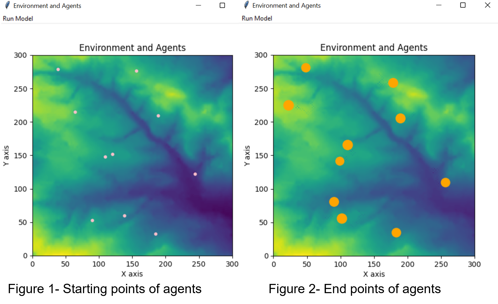
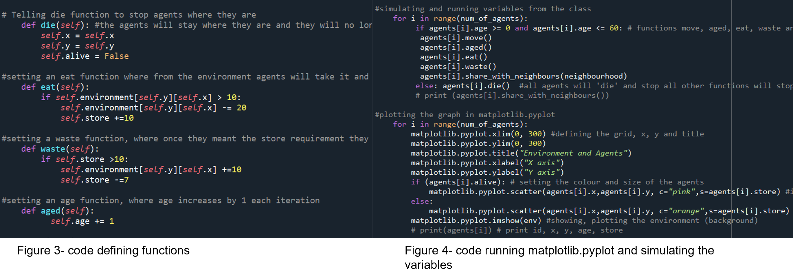

About me
Hello!
My student number is 2015388663
I am Nisa Akkok. I go to the university of Leeds, currently studying Geographical information systems. I am a recent 2021 graduate of Geography from Oxford Brookes University.
I initally did not think making maps was want i wanted to do, i put off taking the module of GIS in my second year but with limited other modules left i decided to take it, as i thought it would be a good skill to have. I realised that making maps was want i wanted to do which qucikly led to me applying for my masters. It was a great way to be passionate about the environment while being about to reasearch, create and talk about the importance of various topics.
Recent achievements
I have many hobbies and love to do all sorts of acitivies. Most recently I have choreographed a Musical, The Wedding Singer as well as performed in it. You can read an article about it here.I also have recent achievements in martial arts, being Boxing and Taekwondo. You can read an article from Oxford Brookes about my Taekwondo here.
As well as more information on my postponed boxing White Collar match event here.
Environment and Agents
The code, license and readme files can be found on Github here. The model that we have created shows an agent-based model. We are using Matplotlib pyplot animation to perform a model on a scatter plot graph, with the backend Tkinter. The model is initializing an agent’s class through a file, which is done by using the python library beautiful soup 4 to pull the data out. This file can be altered where the locations on the scatter will automatically change, figure 1 shows where the agents start and figure 2 shows the model complete and with all the agents have finished their interactions. The number of agents can also be altered through the code, currently the model is running 10.
The environment for the model is being read in through a csv file. There are a total of three scripts that have performed this model animation. One being the script that reads in the environment where the agents interact with. Another defining the function and another to set the variables and plot.
The agents are able to move randomly, where thier movement is set to change by 1 x and y through the module random radiant, where they are able to 'eat' the environemnt and 'store' them through functions defined. Depending on how much environment they eat they can drop it back to the environment as‘waste’. They can share resources and information among them through ‘share with neighbor’. The agents are also able to change aesthetic by changing size throughout, according to how much ‘store’ they have and finally change colour when they ‘die’ at 'age' 60. Agents 'age' were assigned to them randomly through random radiant with a age between 0-20, therefore some reaching 'die' before others and stopping the iteration therefore bringing the model to an end once all have died.
To run the model please click 'run model' and to look at any statistics like agents age, you can uncomment comments. Some comments show where we have tried to create and run a predator in the model however were unsuccessful. This is a great place start for future improvements, where there can be a predator agent that is able to ‘eat’ an agent when it comes in close contact. There can be other requirements for this such as the agent must have a store over 30, to be eaten. An additional improvement can be to make genders of agents, where they reproduce creating additional 'baby' agents, which then grow and repeat the process.
A summary of what this code can do is:
- Build an animated model
- Build agents in a space
- Randomized movement of the agents
- Read in environmental data
- Interact with each other and the environment
- Set within a GUI
- Initialised with data from the web
To access the Sphynix, use this link, . You have to log into the universities sever dialogplus.